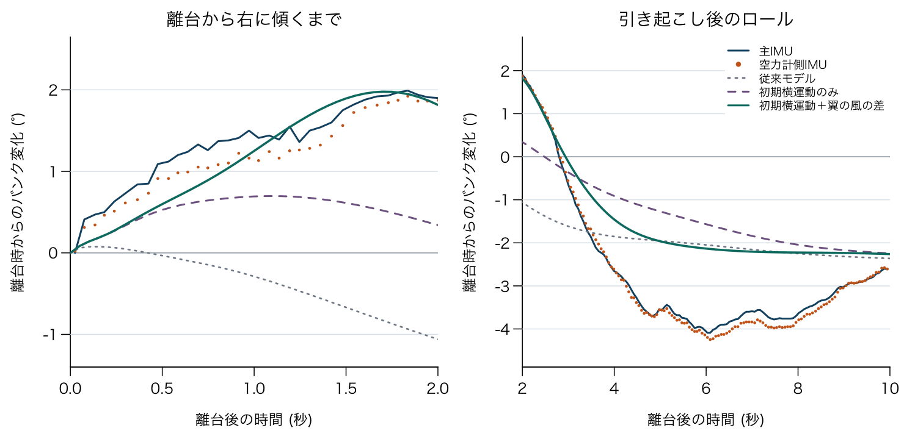

東京理科大学 鳥科 · 2025年大会
竜海 離台後3秒の飛行比較
大会映像を読み込み中公式映像 ↗
映像に写った胴体ブームの傾き
画面の水平線を基準にした投影角です。時刻を選ぶと、その場面を表示します。
実機 IMU基準操縦モデル0.50–1.25 秒
身体位置は操縦モデルの推定で、後方を正としています。実機のピッチは主IMUの収録点を線で結んでいます。ピッチ変化率は両系列とも実際の収録時刻の前後0.20秒で直線を当てた値です。
離台後10秒のロール

両IMU・モデルとも離台時からの変化を表示。再現試算の翼の風は推定条件です。条件別の誤差と計算方法 ↗